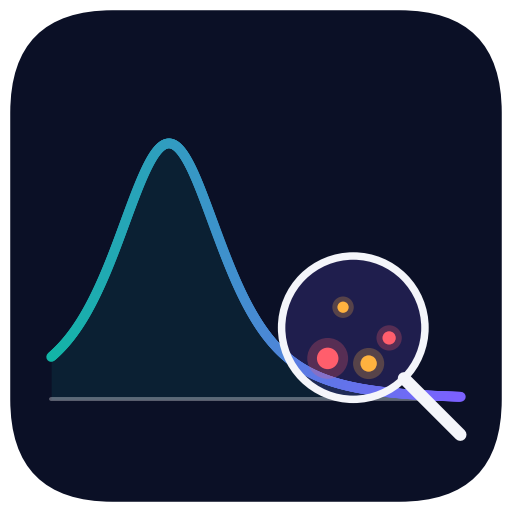
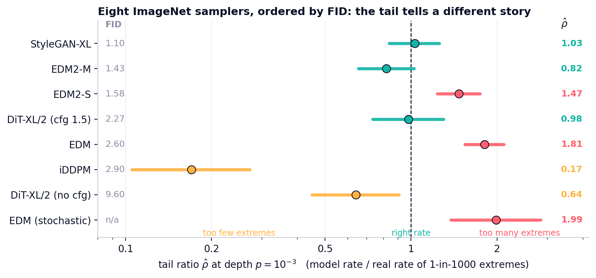
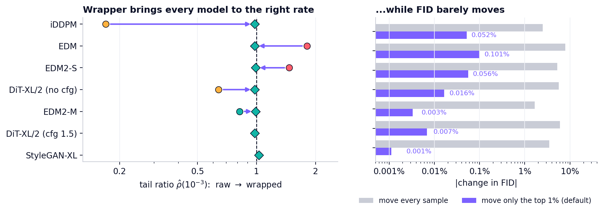
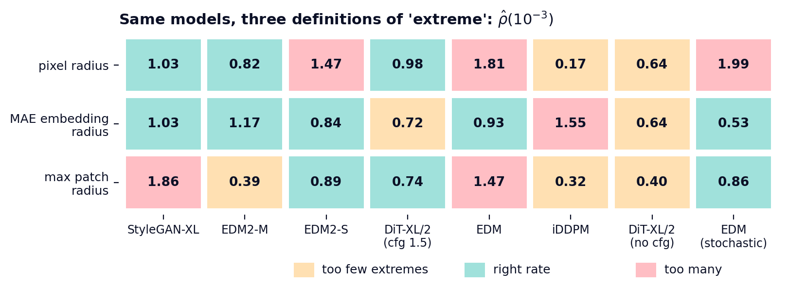
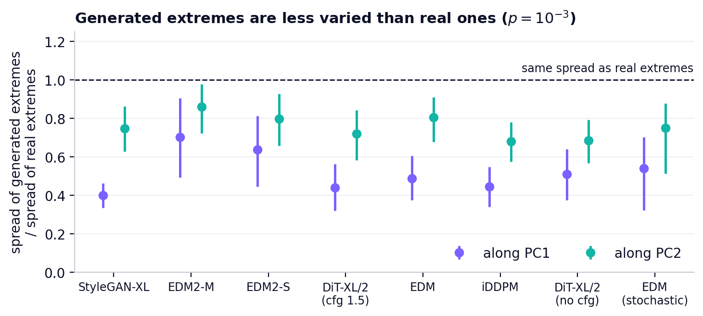
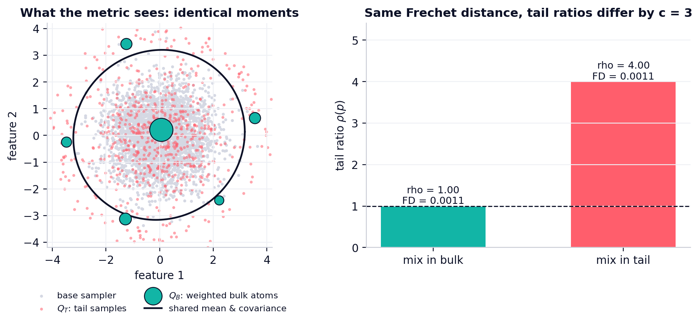
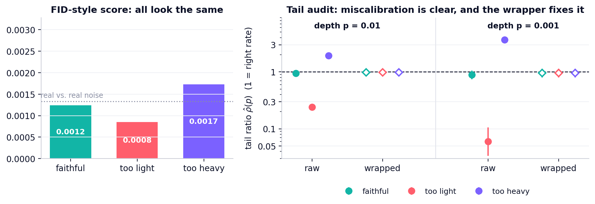
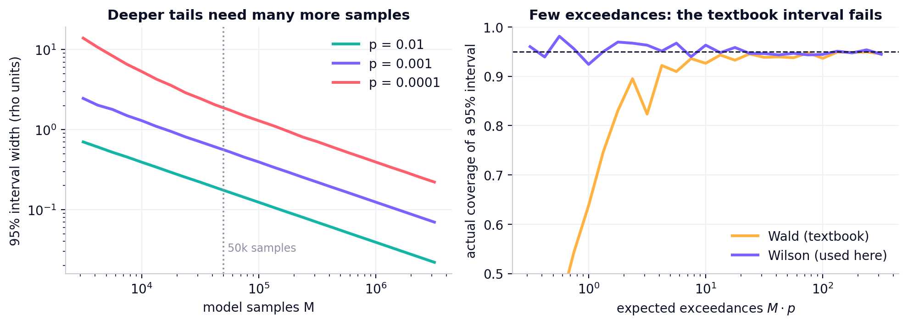
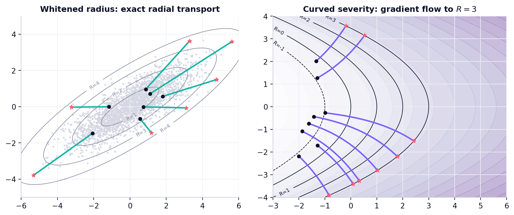

RareCalFID and its relatives summarize the bulk of a distribution. RareCal audits the rare end: how often a generator produces its 1-in-1,000 extremes compared with real data, with intervals that hold when only a few extremes are seen, and a post-hoc wrapper that repairs the rate by moving about 1% of the samples.
Eight public ImageNet samplers (GAN, pixel diffusion, latent diffusion), audited against 1.08 million held-out real images on a common 32×32 grid. Ordered by published FID, their rates of 1-in-1,000 extremes range from 6× too few to 2× too many.

spread in the rate of extremes across eight samplers; only 3 of 8 cover the real rate
of samples moved by the wrapper, which brings all seven wrapped samplers to ρ̂ ∈ [0.98, 1.03]
tests find generated extremes less varied than real ones (Brown–Forsythe, Holm)
change in FID after wrapping; moving every sample instead costs up to 7.9%
too many 1-in-1,000 extremes for a DDPM on CelebA-HQ 256; StyleGAN2-ADA is on target
rank correlation between published FID and the tail ratio (p = 0.34): no usable link
draws any test needs to tell ρ = 1 from ρ = 2 at depth 10⁻⁴ (lower bound)
weights, gradients or retraining steps needed by the audit or the wrapper
The wrapper ranks a batch by severity, assigns each sample the matching quantile of the real calibration law, and moves only the top 1% of ranks to their targets along a shape-preserving transport.



Pick a severity R(x) (default: whitened PCA radius). Fit the calibration law on real data: empirical bulk, generalized-Pareto tail.
Count model samples beyond the real (1−p)-quantile. Wilson interval plus threshold error; verdict under / calibrated / over.
Rank remap to the calibration law and move each tail sample to its target severity. No weights, no gradients.

# install
git clone https://github.com/ziwaa-se/rarecal.git && cd rarecal
pip install -e ".[examples]"
python examples/01_quickstart.py
import rarecal as rc sev = rc.WhitenedRadius(n_components=50).fit(real_calib) # what "extreme" means law = rc.CalibrationLaw.fit(sev(real_calib)) # empirical bulk + GPD tail print(rc.audit(sev(samples), sev(real_heldout), depths=[1e-2, 1e-3])) wrapped = rc.Wrapper(sev, law, tail_only=0.99)(samples) # repair, no retraining
p tau_p k M rho_hat 95% interval verdict 1e-02 8.148 3865 200000 1.93 [ 1.85, 2.02] over 1e-03 11.423 737 200000 3.68 [ 3.24, 4.14] over --- after wrapping (2% of samples moved) 1e-02 8.148 1956 200000 0.98 [ 0.93, 1.03] calibrated 1e-03 11.423 192 200000 0.96 [ 0.80, 1.13] calibrated

Three samplers with identical moments: FID-style scores tie, the audit separates them, the wrapper fixes them.
Exact construction of two samplers with the same Fréchet distance and a 3× different tail ratio.

How many samples a deep-tail audit needs, and why the textbook interval fails with few exceedances.

Moving a sample to a target severity: exact radial rescaling and gradient flow for curved severities.
| Level | Needs | Run | Time |
|---|---|---|---|
| Library & theory | CPU | pytest -q, examples/0*.py | < 1 min |
| Every figure & number | CPU + results/*.csv | scripts/make_results_figures.py | < 1 min |
| Full pipeline | GPUs, public checkpoints, ImageNet / CelebA-HQ | reproduce/ | days |